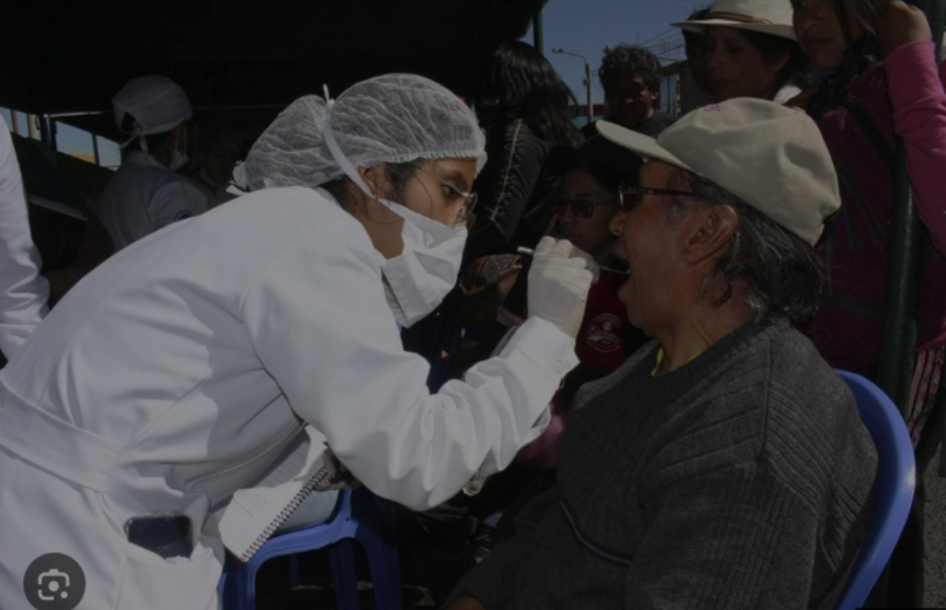

Campovida Foods fue fundada en el año 2016 con el propósito de contribuir al desarrollo económico de la región y del país, mediante la articulación de pequeños productores con los mercados internacionales dándole valor agregado a nuestra biodiversidad.
Desde sus inicios, la empresa buscó generar nuevas oportunidades comerciales y contribuir a la generación de puestos de trabajo en todas las etapas del proceso productivo, garantizando trazabilidad, sostenibilidad ambiental e impacto social real.

Seleccionamos superfrutas nativas y andinas directamente de valles cajamarquinos y del norte del Perú, fomentando prácticas de agricultura ecológica.
Tecnología de deshidratado avanzada que preserva vitaminas, antioxidantes y sabores naturales bajo certificaciones internacionales rigurosas.
Exportamos alimentos orgánicos confiables a exigentes clientes en la Unión Europea, Suiza y los Estados Unidos de América.